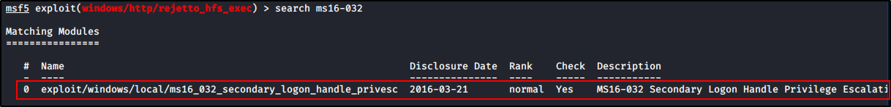

Walktrough - Optimum
Windows Machine
First, start a "nmap -T4 -A -p- IPADDRESS"


There is only one port (80): HttpFileServer httpd 2.3 version
And the OS is probably a Microsoft Windows Server 2012
################################################################
Web Server
We can do some Google search about.
Exploits:


Default Credentials:


We will us the ruby module on Metasploit:


Now we can set a payload (meterpreter preferred) and we can launch our exploit:


As we see, we are not NT AUTHORITY\SYSTEM


And getsystem didn't work:


We can use the SUGGESTOR to get more exploits to do, to get the root access:


Nothing. It is usually hard to get local exploits for x64 machines.
Or, we can search for the OS privilege escalation online or on Metasploit


We found an MS16-32 can help us (LOOK AT THE RIGHT OF THE IMAGE)





Now set a payload and run the exploit:
The exploit sometimes work, other times not (this time don't)


Manual Methods for Privilege Escalation:
ALSO WE CAN SEARCH FOR MANUAL PRIVILEGE ESCALATION


################################################################
We can use a tool called “Sherlock” rasta-mouse or Watson
https://github.com/rasta-mouse/Sherlock
https://github.com/rasta-mouse/Watson


We can download the .ps1 script, and load on Windows machine


Run the Sherlock .ps1 script: it will suggest use some exploits that may be working


Or we can search some tools like Windows Exploit Suggester: Read wht instructions!!!
https://github.com/AonCyberLabs/Windows-Exploit-Suggester


Now we can use the nex exploit, compile and run:


Just transfer this on enemy machine Windows and execute: (we called the file sh.exe)